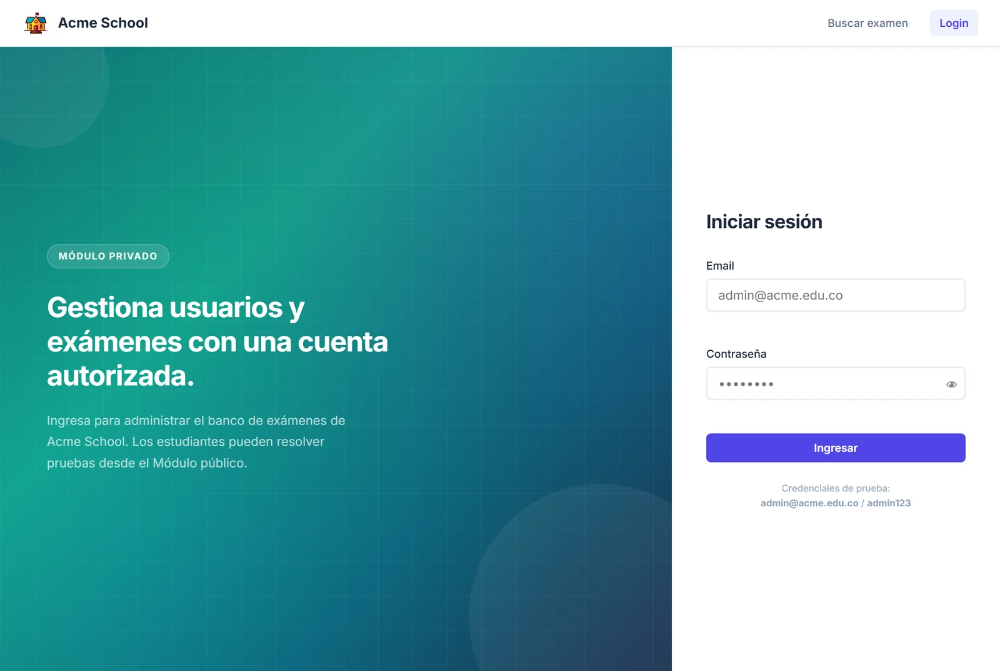
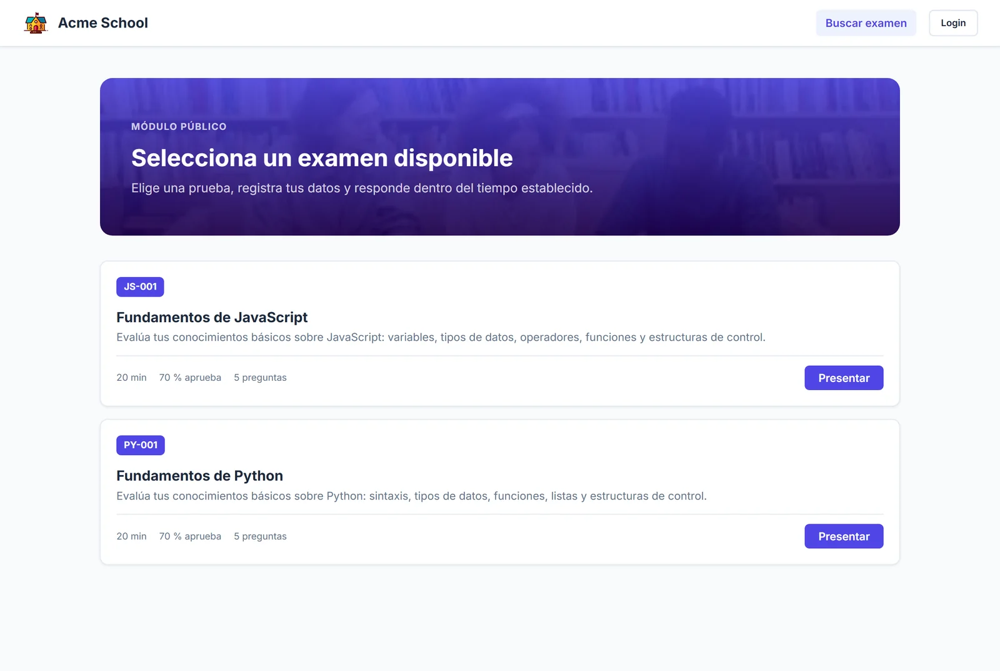

Módulo privadoPrivate module
Inicio de sesiónSign-in
Los administradores entran para crear exámenes con preguntas dinámicas y gestionar usuarios.
Admins sign in to create exams with dynamic questions and manage users.

Aplicación web · 2026
Web application · 2026
Plataforma de exámenes en línea hecha con JavaScript vanilla
An online exam platform built with vanilla JavaScript
Acme School permite crear y administrar exámenes y que los estudiantes los presenten en línea. Tiene un módulo privado para el personal y un módulo público para estudiantes. Funciona sin backend: guarda los datos en localStorage.
Acme School lets staff create and manage exams and lets students take them online. It has a private module for staff and a public module for students. It runs without a backend and stores its data in localStorage.
Los administradores entran para crear exámenes con preguntas dinámicas y gestionar usuarios.
Admins sign in to create exams with dynamic questions and manage users.

Los estudiantes eligen un examen del catálogo y lo presentan con temporizador.
Students pick an exam from the catalog and take it with a timer.
